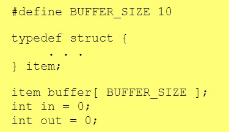
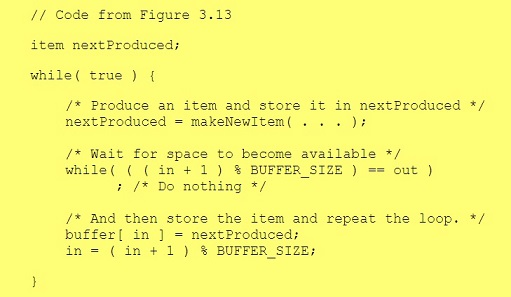
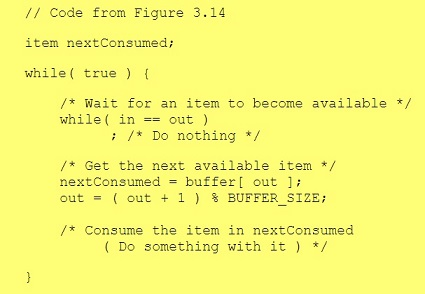

Processes can be split into 2 types with regards to their ability to communicate with other processes:
Independent Processes have no capability to affect other processes, likewise other processes have no affect on them.
Cooperating processes can have an affect on other processes and can be affected by other processes.
Cooperating processes require a way to enable their inter-communication, this usually involves one of the following two methods:
Shared Memory. This can be the faster method but is complicated to set up. It functions best in sharing large amounts of information on a single computer. It does not work well across multiple machines.
Message-Passing. This is a slower method but can be set up quickly and functions well across multiple machines. It is preferably used when passing a smaller amount of information across multiple computers.
The memory to be shared is initially found within the address space of a particular process. System calls are made in order to make that memory publicly available. Other processes can then produce a system call to attach the memory onto their own address space. A few messages need be put back and forth between the processes to establish initial set-up and co-ordination.
In a typical example of this method of intercommunication, one process would be producing the data and the other process consuming that data. The data will be passed via an intermediary buffer. This type of buffer can be either bounded or unbounded. On a bounded buffer, the producer must wait until space becomes available on the buffer. On the unbounded buffer, the producer never needs to wait.
Here is an example of shared memory communication using a circular queue. We set up the following data in the area of shared memory:  This is the producer process. The buffer is full when "in" is one less than "out":  This is the consumer process. The buffer is empty when "in" is equal to "out": For message-passing, the minimum requirement is to be able to support system calls for "send message" and "receive message". A communication link must then be established. 3 further issues need to be resolved, they are explain as follows.
Naming - In direct communication, the name of the receiver must be known by the sender in order to pass the message. In indirect communication, mailboxes or ports can be used to send the message.
Synchronization - The sending or receiving of messages can be either blocking or non-blocking.
Buffering - Messages are passed via queues in one of three confgurations. With zero capacity, messages cannot be stored in queues, so senders must block until receivers accept. With bounded capacity, the queue has a finite capacity. If the queue is full, senders must block. With unbounded capacity, the queue has infinite capacity and senders never need to block.
Comprehensive explanation of processes including interprocess communication
https://www.cs.uic.edu/~jbell/CourseNotes/OperatingSystems/3_Processes.html